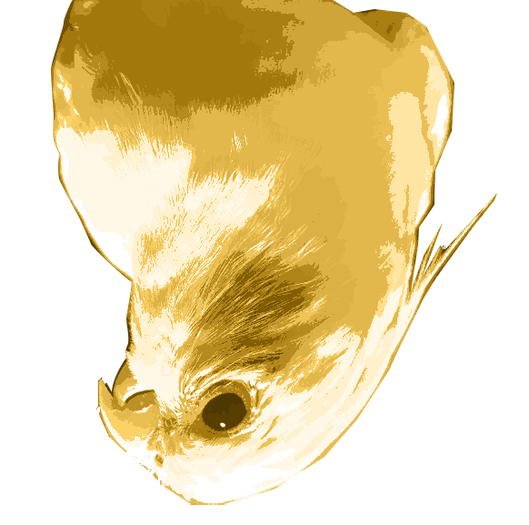
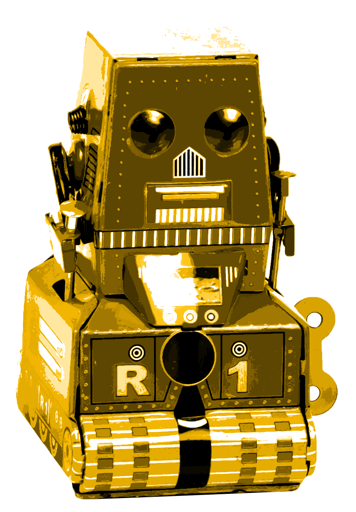

4가지 사진 중, 행복이를 고르시오


“답은 모르겠지만 저는 로봇이 아닌데요?”
라고 생각하신 당신을 위해, 나만 알고있던 그 노하우를 친절히 공개하고자 한다.
이제부터 나오는 사진의 좌측은 ‘장군이’, 우측은 ‘행복이’다.


털을 부풀린걸 보았을 때, 장군이는 머리가 각졌다는 특징이 있다.

앞모습이나 옆모습을 보았을 때, 장군이는 머리털이 비교적 곧고 행복이는 꾸불꾸불 제멋대로 나있다는 특징이 있다.
아닐 경우도 있지만 대부분의 경우 행복이는 머리를 다 내려도 한가닥이 올라와있다.

장군이가 행복이에비해 부리의 전체 크기가 작다.

행복이에 비해 장군이는 비교적 눈과 코 사이 부분이 까맣다.


장군이보다 행복이 눈매가 좀더 쳐졌고 반달 웃음을 잘 짓는다.
인스타그램